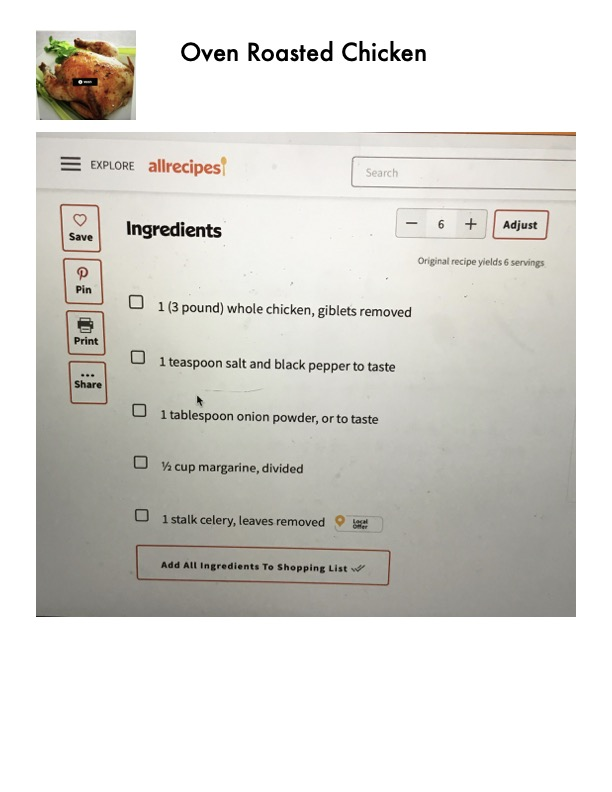

Oven Roasted Chicken

Original cookbook page 84
Classic oven roasted whole chicken seasoned with salt, pepper, and onion powder, with margarine and celery for flavor and moisture.
Prep: 10 minutes • Cook: 1 hour 15 minutes • Total: 1 hour 25 minutes (plus 30 minutes resting)
Ingredients
- 1 (3 pound) whole chicken, giblets removed
- Salt and black pepper to taste
- 1 tablespoon onion powder, or to taste
- ½ cup margarine, divided (3 tablespoons for cavity + dollops for exterior)
- 1 stalk celery, leaves removed, cut into 3-4 pieces
Instructions
- Preheat oven to 350°F (175°C).
- Place chicken in a roasting pan, and season generously inside and out with salt and pepper.
- Sprinkle inside and out with onion powder.
- Place 3 tablespoons margarine in the chicken cavity. Arrange dollops of the remaining margarine around the chicken's exterior.
- Cut the celery into 3 or 4 pieces, and place in the chicken cavity.
- Bake uncovered 1 hour and 15 minutes in the preheated oven, to a minimum internal temperature of 180°F (82°C).
- Remove from heat, and baste with melted margarine and drippings.
- Cover with aluminum foil, and allow to rest about 30 minutes before serving.
📝 Recipe Notes
Make sure internal temperature reaches 180°F (82°C) for food safety. Resting the chicken for 30 minutes helps retain juices when carving. Combined recipe from pages 84-85.
Recipe #84 from collection